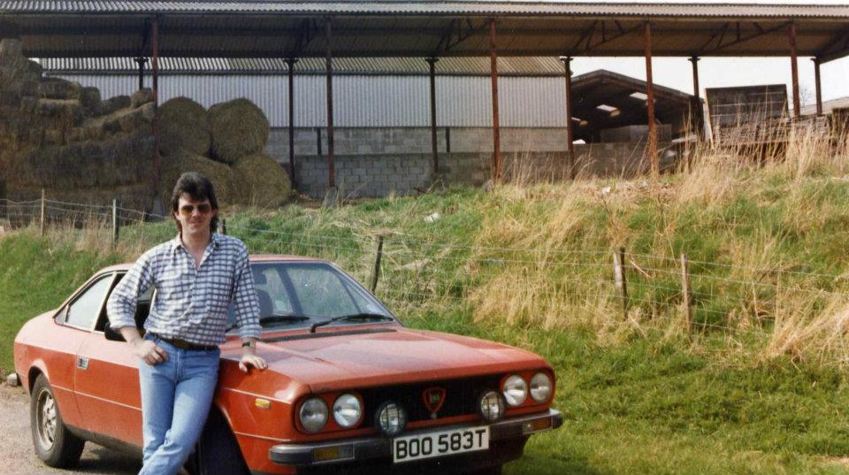
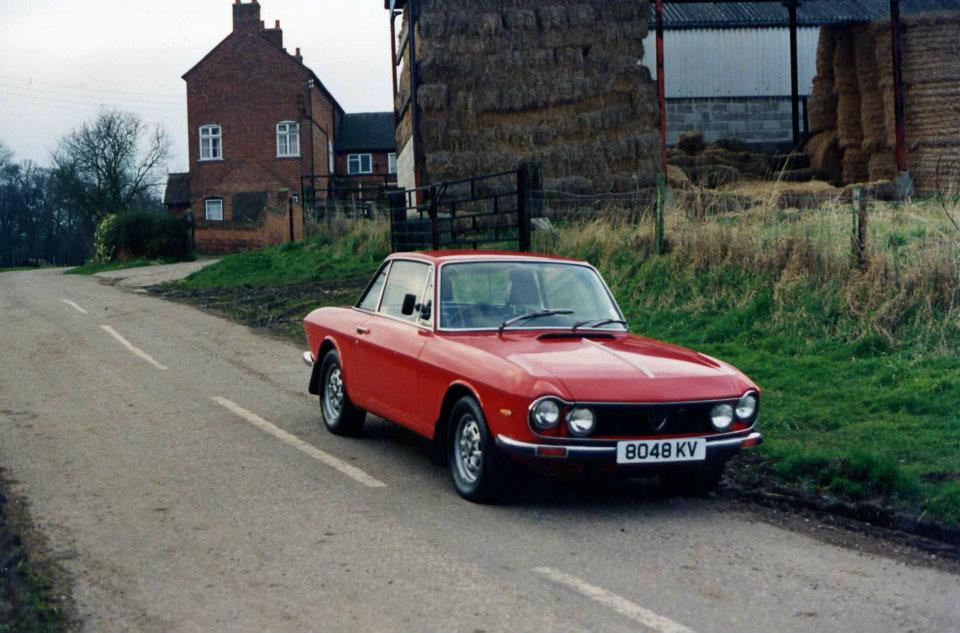
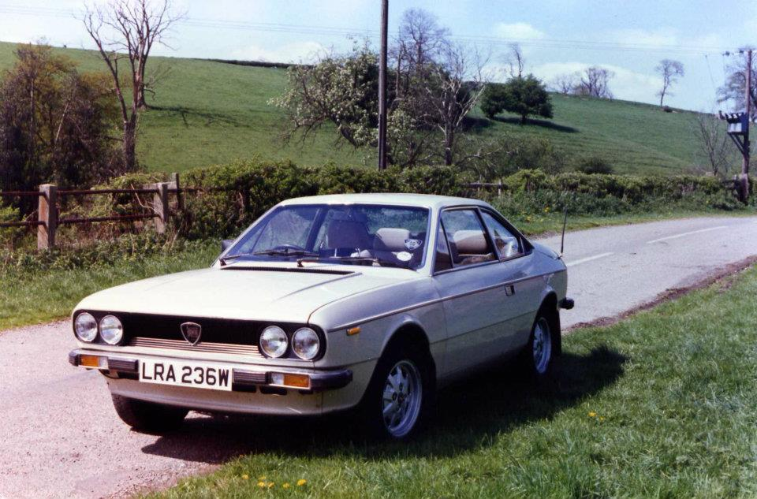
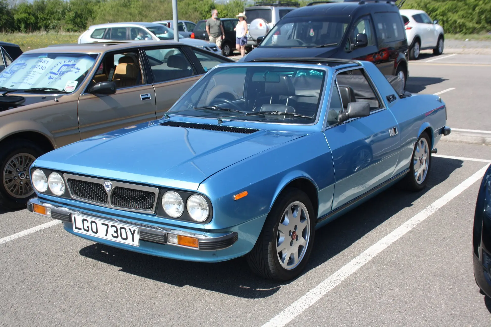
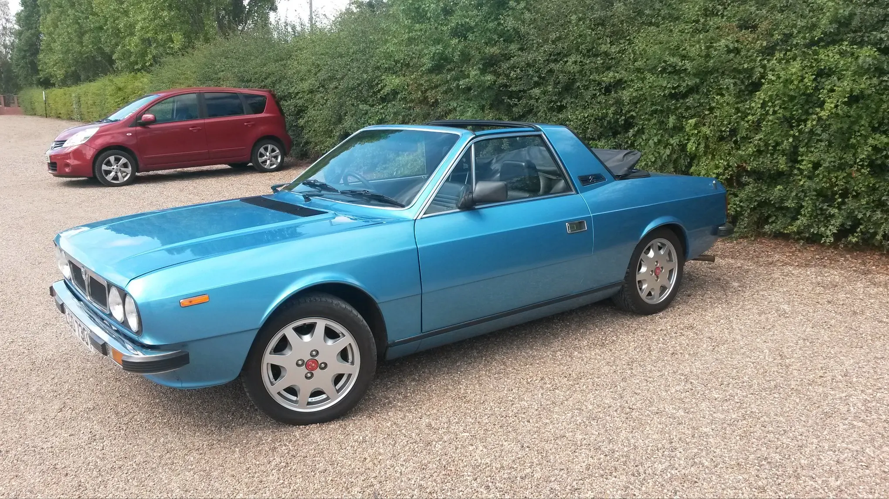
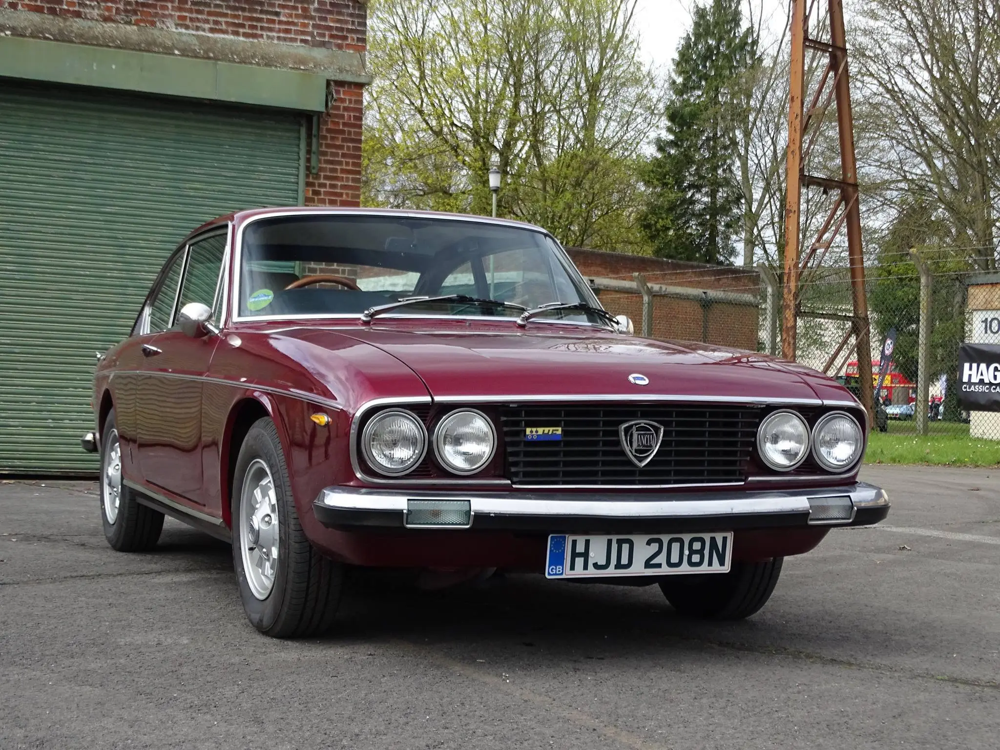

ChatGPT on why he might have loved them
-
ChatGPT prompt:
- can you tell me about the lancia car brand? my dad was born in the 1950s in working class england and loved them, presumably in the 1960s and 1970s and etc, eventually he bought some in the 2000s, 2010s
-
Founded: 1906, in Turin by Vincenzo Lancia (a Fiat engineer).
-
Reputation: Early on, Lancia was known for engineering elegance — light, advanced, often over-engineered cars.
-
Innovations: They pioneered things like the monocoque chassis (Lambda, 1922), independent front suspension, and the V4 engine — decades ahead of rivals.
Why Your Dad Would’ve Loved Them
- Aesthetic Contrarianism: Admiring Lancia marked you as someone who saw beyond the obvious — not just into power, but into design, detail, and feel.
- Working-class aspiration: In postwar Britain, Italy was exotic; owning or even dreaming of an Italian car was like having a passport to another, more stylish world.
- Underdog loyalty: Even after Lancia withdrew from the UK, fans stayed devoted — fixing rusty Betas in their garages, remembering the Stratos’ howl, or eventually importing later models.
1950s–60s: Engineering Nobility
- Models like the Aurelia (1950) and Flaminia (1957) were understated, beautiful grand tourers.
- They were expensive and delicate — cars for Italian architects and professors rather than playboys.
- In the UK, they had a cult following among engineers, designers, and aesthetes — people who noticed the details.
- Think of it as the “anti-Jaguar” or “thinking man’s Alfa Romeo.”
- ““anti-Jaguar” means the opposite of the flashy, status-seeking British luxury car.”
- Think of it as the “anti-Jaguar” or “thinking man’s Alfa Romeo.”
Oh shit, this is cool!
- My personal take was that caring about cars in general was just this like, status-seeking thing (“look at me with my loud flashy car, aren’t I cool”)
- I hadn’t imagined liking it for the technical elements or something
- ChatGPT prompt: “how might it feel to love lancias then? something about admiring their… something. I’m really not a car guy so I find this very hard to imagine. Please keep it concise ”
- It might feel like admiring graceful intelligence made metal — loving a car not for power or prestige, but for its cleverness, restraint, and soul.
- Driving one felt like being in on a secret: the quiet thrill of precision and beauty that most people overlooked.
1970s–80s: Rally Royalty & Rust
-
Lancia’s glory years came on the rally circuits:
-
Stratos (1974–77) — a mid-engine wedge built purely for rallying, iconic and wildly successful.
-
Delta Integrale (1980s) — boxy hatchback turned world-beater, won six consecutive World Rally Championships.
-
-
At the same time, road cars (like the Beta) infamously rusted.
- British climate + Italian steel = disaster.
- By the late 1970s, “Lancia” became a punchline in Britain — “they dissolve in the rain.”
-
Yet that made them all the more romantic to a certain kind of fan: doomed genius, tragic beauty — like an Alfa or Lotus with a PhD.
Photos from my dad’s facebook
- Idk if these are all ones he owned, but he has an album of them!

- 👆 this must have felt cool as FUCK. To be fair, that’s a very nice car



- 👆 I have vague memories of this one

